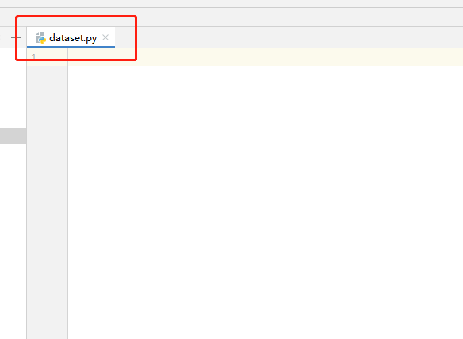
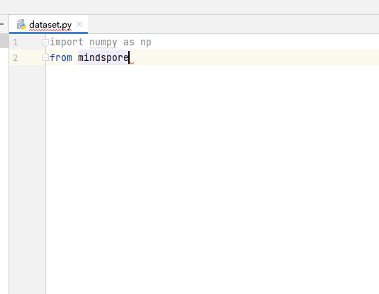
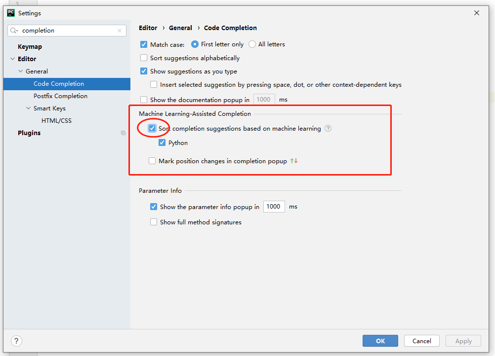
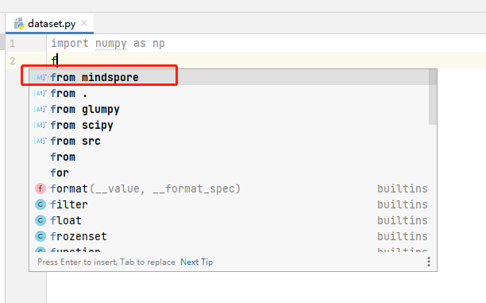
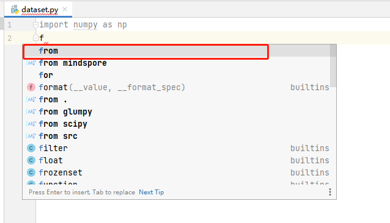

Code Completion

Functions
It completes code based on AI for the MindSpore project.
You can easily develop MindSpore without installing the MindSpore environment.
Procedure
Open a Python file and write code.

During encoding, the code completion function is enabled automatically. Code lines with the “MindSpore” identifier are automatically completed by MindSpore Dev Toolkit.


Description
In versions later than PyCharm 2021, the completed code will be rearranged based on machine learning. This behavior may cause the plug-in’s completed code to be displayed with lower priority. You can disable this function in Settings and use MindSpore Dev Toolkit to sort code.

Comparison before and after this function is disabled.
Function disabled

Function enabled
